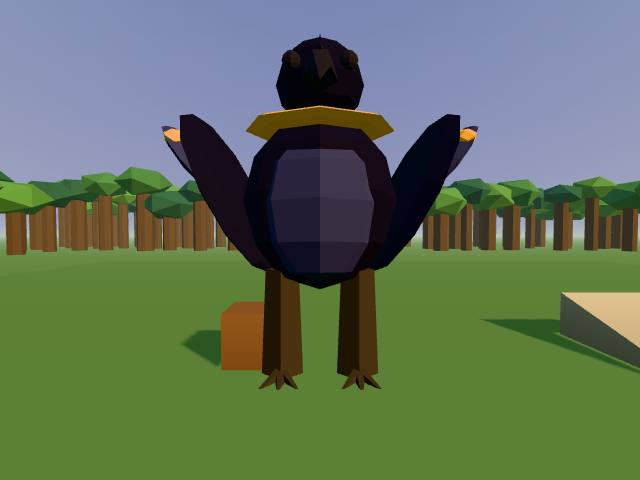
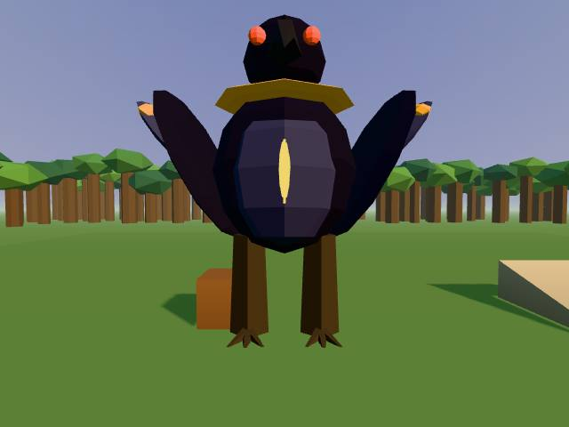
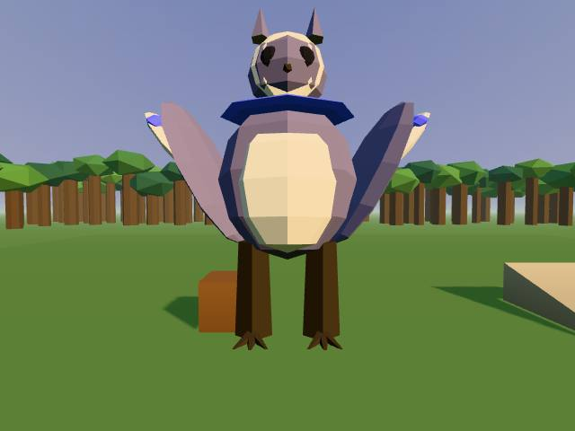
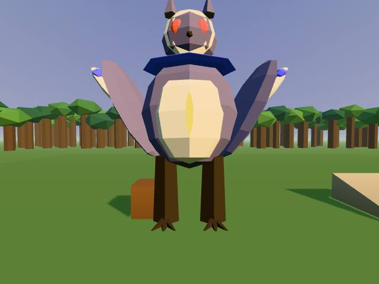
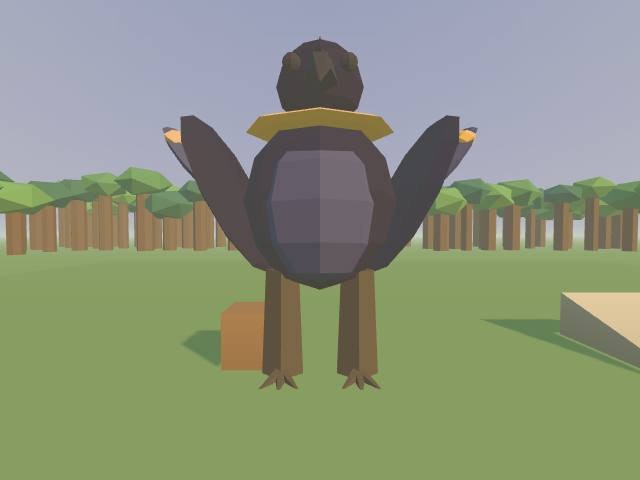

Patrons
Each flock has a giant guardian bird in the heart of its base: the Elder Raven for Dawn and the Great Owl for Dusk. Destroy the enemy Patron to win the match. The Patron does not move or regenerate.




Two phases
The Patron is invulnerable until both of its flock's Roost Shrines have fallen. Then it has two phases. In phase 1 it fires volleys of homing feathers and screeches at anyone who gets close. When its health bar runs out it sheds feathers in a short invulnerable transition, with a blast that knocks enemies back, and returns for phase 2 with a fresh bar and new attacks. Phase 2 is permanent, and a glowing heart-feather on its chest takes extra damage from gun hits. Destroying it in phase 2 ends the match.
| Phase 1 | Transition | Phase 2 | |
|---|---|---|---|
| Health | 15,000 | 3 s, invulnerable | 20,000 |
| Feather Volley | every 3 s: 6 homing feathers over up to 3 heroes within 35 m, 50 Song each | blast knocks enemies back 8 m within 20 m, no damage | every 2 s |
| Screech | every 10 s if a hero is within 14 m: 100 Song, 8 m knockback | ||
| Talon Rain | every 6 s: 3 m circles under up to 4 heroes, 1 s warning, 180 Song each | ||
| Wing Gale | every 12 s: 30 m cone, 60 Song, 10 m push | ||
| Weak point | glowing heart-feather on the chest: gun hits ×1.5 |
Brood Ward
Backdoor protection. Towers and Patrons take much less damage while no attacking fledgling is near, shown as a pale eggshell dome that cracks away when your fledglings arrive. Push with your waves.

| Brood Ward | Value |
|---|---|
| Range of the attacking fledgling check | 30 m |
| Damage multiplier while no attacking fledgling is near | ×0.65 (−35%) early, ×0.4 (−60%) from 35:00 |
| Fledglings spawned late are | 25% stronger |
Home Roost
The spawn platform behind each Patron. It heals your flock and hurts enemies who enter, and holds a Magpie's Hoard. Its damage zone exists to stop spawn camping.
| Home Roost | Value |
|---|---|
| Heals your flock | 20% of max HP every 1 s |
| Damages enemies | 300 Song per second |
| Also | respawn point and Magpie's Hoard |